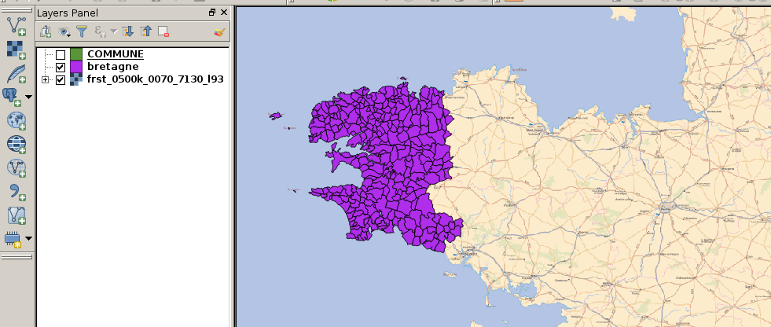

Composeur et atlas (1)
Composeur de carte
- Fournit des outils de mise en page et d'impression :
- échelle, carte, légende, ...
- export (SVG, PDF, ...)
Atlas
Création automatisée d'une carte pour chaque entité d'un couche virtuelle
Composeur de carte
Atlas
Création automatisée d'une carte pour chaque entité d'un couche virtuelle
Composeur de carte

1 - Avoir un shapefile des communes de Bretagne dans le canvas principal supperposé avec le même fond de carte raster que précédement.

2 - Aller dans le composeur de carte et rajouter la carte principale zoomant sur la Bretagne puis ajouter une seconde carte servant d'overview d'un point de vue national
3 - Rajouter des éléments à la carte : échelle, légende, forme, flèche, image, ...
4 - Labeliser la couche vecteur
5 - Faire un export.
6 - Faire un atlas avec un polygone "COMMUNE" comme entité de référence.
7 - Rajouter un deuxième overview d'un point de vue départemental.
8 - Rajouter un champs texte utilisant une expression affichant la densité de population de l'entité courante à partir de la superficie calculée par QGIS
9 - Imprimer l'atlas dans un PDF